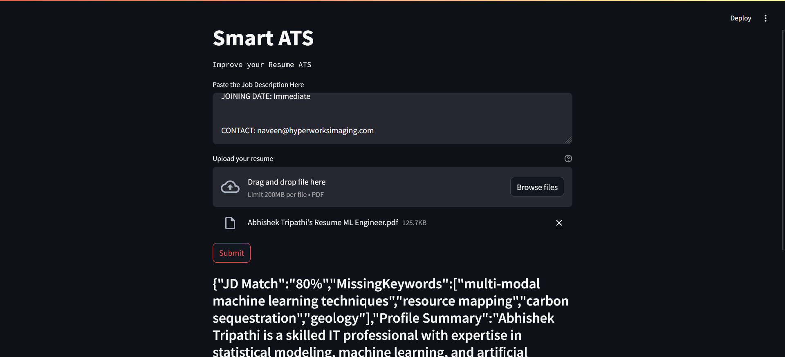
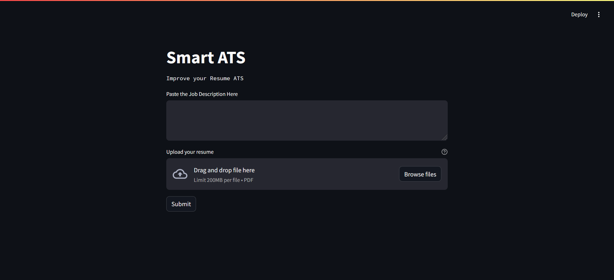

An ATS-style resume screening tool built with Google's Gemini Pro model — takes a resume and a job description and returns a match percentage, a summary of the fit, and missing keywords, similar to how automated recruiting pipelines score candidates.
The real app calls the paid Gemini Pro API, so this can't run live in a public demo. Below is the actual app's UI and its exact real prompt template, reproduced from app.py — pick one of 3 real sample resume/JD pairs and "Submit" to see a pre-generated response in the exact JSON structure the real app returns ({"JD Match":"%","MissingKeywords":[],"Profile Summary":""}), not a live inference.
Copied verbatim from app.py — this is the real prompt sent to gemini-pro:
Hey act like a skilled or very experienced ATS (Application Tracking System)
with a deep understanding of tech field, software engineering, data science, data analyst
and big data engineer. Your task is to evaluate the resume based on the given job description.
You must consider the job market is very competitive and you should provide best assistance for
improving their resumes. Assign the percentage Matching based on Job Description and the missing keywords with high accuracy.
Resume: {text}
Description: {jd}
I want the response in one single string having the structure
{"JD Match":"%","MissingKeywords":[],"Profile Summary":""}

